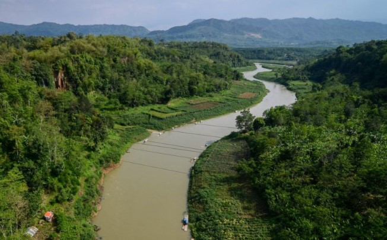
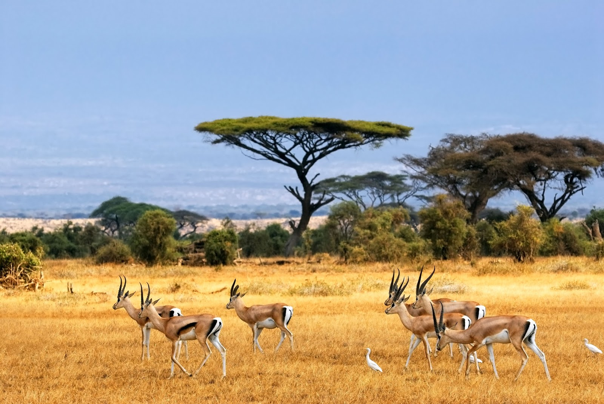
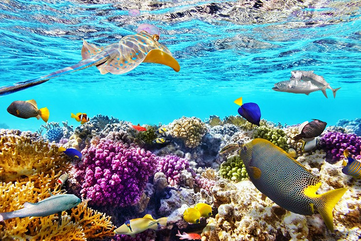
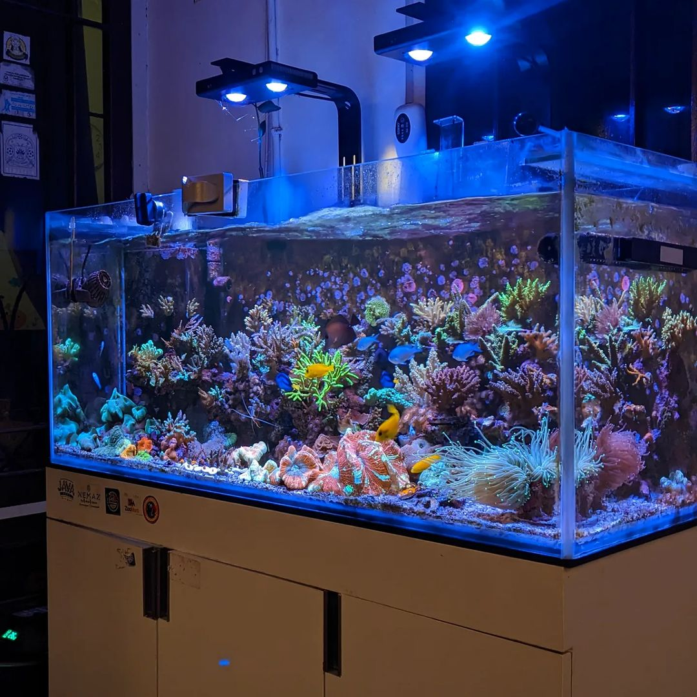

EKOSISTEM


Ekosistem
- Siswa mampu menjelaskan apa saja jenis ekosistem.
- Siswa mampu mengidentifikasi jenis-jenis ekosistem dengan benar.
Jenis Ekosistem
Ada dua macam ekosistem di bumi kita, yaitu ekosistem alami dan ekosistem buatan:
a. Ekosistem Alami
Ekosistem alami adalah ekosistem yang terbentuk dengan sendirinya tanpa campur tangan manusia, diciptakan oleh Tuhan. Ekosistem alami beragam, beberapa jenis ekosistem antara lain: darat dan air.
Ekosistem yang sebagian besar isinya adalah daratan. Setiap daratan dibumi memiliki ciri khas masing-masing, mewakili tempat serta iklim yang dimiliki setiap ekosistem. Ekosistem ini juga bisa disebut sebagai bioma, seperti bioma hutan hujan tropis, hutan gugur, dan sabana.

Gambar 1.
Ekosistem alami darat hutan hujan tropis.
Ekosistem air adalah lingkungan yang terdiri dari komponen biotik dan abiotik serta didominasi oleh air sebagai habitat dari komponennya. Ekosistem ini dihuni oleh beragam makhluk yang hidupnya di air ataupun di dua alam (air dan darat). Makhluk hidup ini bisa berupa binatang dan tumbuhan. Pada ekosistem ini cahaya matahari terbatas, hal ini karena sulitnya cahaya matahari menembus perairan. Sehingga perubahan suhu tidak ekstrim. Ekosistem air terbagi menjadi 2, yaitu ekosistem air tawar dan ekosistem air laut.


Gambar 2 dan 3.
Danau ekosistem alami air tawar dan Laut ekosistem alami air laut.
b. Ekosistem Buatan
Ekosistem buatan adalah sebuah kondisi lingkungan dimana seseorang memang dengan sengaja dibentuk atau dibuat untuk membantu kelangsungan hidup hewan lainnya dan lingkungan. Ekosistem buatan beragam, beberapa jenis ekosistem buatan antara lain: bendungan, persawahan, waduk.
Gambar 4 dan 5.
Ekosistem buatan ekosistem bendungan dan ekosistem sawah.
Ayo Jawab
- Tentukan mana saja yang masuk kedalam Ekosistem Alami dan Ekosistem Buatan.
- Klik pada salah satu tombol untuk memilih jawaban.
- Setelah selesai klik tombol Cek Jawaban untuk melihat hasil jawaban.
Manakah berikut ini yang termasuk ke dalam Ekosistem Alami dan Ekosistem Buatan ?
| No. | Gambar | Kategori |
|---|---|---|
| 1. |  Perkebunan Sawit |
|
| 2. |  Sungai |
|
| 3. |  Sabana |
|
| 4. |  Laut |
|
| 5. |  Akuarium |
|
Copyright © 2022, Fikry Muhammad (1610131310010)
Media Pembelajaran IPA Kelas 5 : Ekosistem